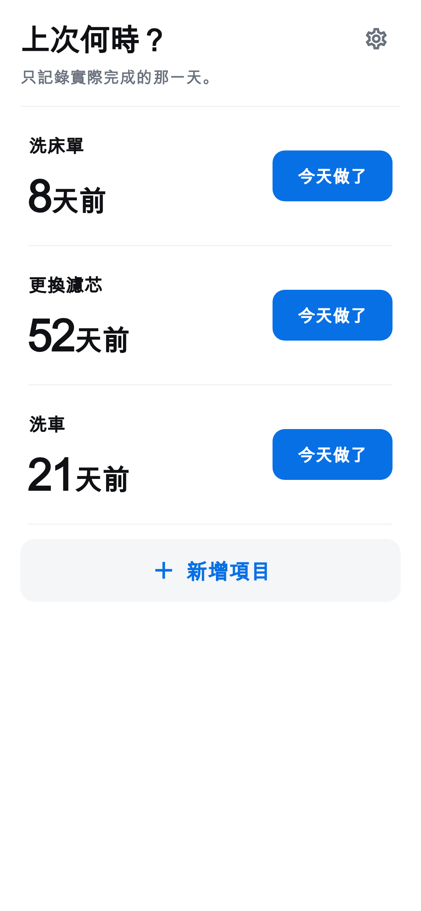

上次何時？ · iOS / Android
記錄清潔、更換與保養日期，查看距離上次過了多久。
已於 App Store 上架

使用方法
只需輸入名稱，即可新增清潔、更換或保養項目。
「今天做了」會立即儲存。若誤按，可立即復原。
首頁顯示經過天數。點選項目可查看歷史與平均間隔。
只留必要功能
沒有提醒或建議週期。平均值只反映您自己的記錄。
項目與歷史記錄儲存在裝置上。離線也能記錄；廣告需要網路。
OS 備份可能包含應用程式資料，但不保證能復原。